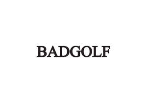

Trade Mark Journal No.2026/006 6 February 2026
UK00004312131 17 December 2025 (18,25,28,35,37,38,41)
Mark 1
BADGOLF
Mark 2

- Class 18
- Bags and luggage; sports bags; gym bags; duffel bags; backpacks; rucksacks; tote bags; travel bags; drawstring bags; carryalls; wallets; purses; key cases; luggage tags; umbrellas; parasols; leather and imitation leather goods; goods made of leather and imitation leather not included in other classes; carrying cases, pouches and holders specially adapted for sporting equipment; protective bags and covers for sporting apparatus.
- Class 25
- Clothing, footwear and headwear; athletic and fitness clothing; sportswear; leisurewear; activewear; training wear; performance clothing; jerseys; tops; t-shirts; sweatshirts; hoodies; jackets; coats; vests; shorts; trousers; joggers; leggings; tracksuits; skirts; dresses; base layers; socks; sports shoes; trainers; athletic footwear; caps; hats; beanies; headbands; wristbands; gloves.
- Class 28
- Games, toys and playthings; sporting articles and equipment; sporting apparatus and instruments; balls; bats; sticks; racquets; paddles; nets; goals; targets; protective sporting equipment; training aids; fitness and exercise equipment; practice equipment; electronic games; board games; card games; video games; apparatus for games adapted for use with television receivers or computer screens; modular and reconfigurable sporting apparatus; safety and protective equipment adapted for a bespoke sport; parts, fittings and accessories for all the aforesaid goods.
- Class 35
- Advertising; advertising via the internet; electronic billboard advertising; magazine advertising; advertising services; advertising services in relation to sporting events and competitions; marketing services; marketing services in relation to sporting events and competitions; promotional services; promotional marketing; event marketing; digital marketing; production of advertising matter; arranging and conducting of promotional events; conducting of commercial events; promotion of sports competitions and events; retail services in relation to, bags and luggage, sports bags, gym bags, duffel bags, backpacks, rucksacks, tote bags, travel bags, drawstring bags, carryalls, wallets, purses, key cases, luggage tags, umbrellas, parasols, leather and imitation leather goods, goods made of leather and imitation leather not included in other classes, carrying cases, pouches and holders specially adapted for sporting equipment, protective bags and covers for sporting apparatus, clothing, footwear and headwear, athletic and fitness clothing, sportswear, leisurewear, activewear, training wear, performance clothing, jerseys, tops, t-shirts, sweatshirts, hoodies, jackets, coats, vests, shorts, trousers, joggers, leggings, tracksuits, skirts, dresses, base layers, socks, sports shoes, trainers, athletic footwear, caps, hats, beanies, headbands, wristbands, gloves, games, toys and playthings, sporting articles and equipment, sporting apparatus and instruments, balls, bats, sticks, racquets, paddles, nets, goals, targets, protective sporting equipment, training aids, fitness and exercise equipment, practice equipment, electronic games, board games, card games, video games, apparatus for games adapted for use with television receivers or computer screens, modular and reconfigurable sporting apparatus, safety and protective equipment adapted for a bespoke sport, parts, fittings and accessories for all the aforesaid goods.
- Class 37
- Installation, maintenance and repair of sporting equipment and sporting apparatus; installation of sports facilities, courts, pitches, arenas and play areas; installation of bespoke, purpose-built or modular venues and playing environments designed specifically for a proprietary or hybrid sport; installation of goals, nets, markings and sporting infrastructure; assembly and installation of training and fitness equipment; advisory, consultancy and information services relating to the design, installation and maintenance of sporting equipment, playing surfaces and sports facilities.
- Class 38
- Broadcasting and transmission of audio, video and audiovisual content; streaming of video, audio and multimedia content via the internet and other communications networks; live streaming of sporting events and competitions; television, radio and digital broadcasting services; webcasting services; transmission of podcasts; providing online chat rooms, forums and electronic bulletin boards for the transmission of messages relating to sport; providing access to digital content relating to sporting events, news, analysis and commentary.
- Class 41
- Education, training and instruction services; sporting and cultural activities; organisation, arrangement and management of sporting events, competitions, tournaments, leagues and matches; organisation of exhibitions for sporting purposes; coaching, training and instruction in sport and physical fitness; provision of facilities for sporting activities; refereeing and officiating services; development, establishment and governance of rules, regulations and standards for a proprietary or hybrid sport; entertainment services relating to sport; production of audio, video and audiovisual content relating to sport; publication of electronic and printed materials relating to sport; providing news, information, statistics, analysis and commentary relating to sporting events and activities; provision of online non-downloadable videos, films and multimedia content relating to sport; certification services, namely operation of accreditation schemes and operation of accreditation schemes relating to sports and sporting events.
Jonathan A Bruce
Representative: Trade Mark Wizards Limited